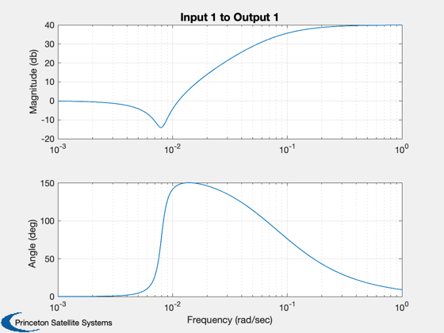

Design and test the nutation compensator.
Requires the output of ComStarRYLF.m, RYC.mat. ------------------------------------------------------------------------- See also Gen2nd, ComStarRYLF, Series, C2DZOH, C2DelZOH, FResp, Plot2D, Rename, WriteCM -------------------------------------------------------------------------------
Contents
%------------------------------------------------------------------------------- % Copyright 1996 Princeton Satellite Systems, Inc. % All rights reserved. % Since version 2. %-------------------------------------------------------------------------------
Simulation parameters
%---------------------- cMatrices = 'yes'; % If yes will dump matrices to a file (RYNut) and display them % Load in the data generated by ComStarRYLF.m % This supplies a, b, c, d and rYGain. %-------------------------------------- load RYC
Connect the skew dipole and earth sensor
%----------------------------------------- a = aP; b = bP*rYGain; c = [1 0 0 0]; % Only roll is available d = 0; w = logspace(-6,0,400); FResp(a,b,c,d,1,1,w); Rename('Open Loop'); wz = 0.008; % Adjust these parameters to change the nutation damping zz = 0.1; zp = 1; wp = 0.08; %
The nutation compensator
%------------------------- [aN,bN,cN,dN] = Gen2nd ( zz, wz, zp, wp ); w = logspace(-3,0,400); FResp(aN,bN,cN,dN,1,1,w); Rename('Nutation Compensator'); [aT,bT,cT,dT] = Series( a, b, c, d, aN, bN, cN, dN ); FResp(aT,bT,cT,dT,1,1,w); Rename('Open Loop with Compensator'); aCL = aT + bT*cT; s = eig(aCL); DispWithTitle(s,'Eigenvalues');
Eigenvalues
-0.064909 + 0.072632i
-0.064909 - 0.072632i
-0.014196 + 0.023776i
-0.014196 - 0.023776i
-0.0017143 + 0i
-7.6505e-05 + 0i
 
Simulate the nutation compensator
%---------------------------------- dT = 0.25; nSim = 1000; [aZCL,bZCL] = C2DZOH(aCL,bT,dT); [aZOL,bZOL] = C2DZOH(a,b,dT); xCL = [0;0;0.001;0;0;0]; % Some roll rate xOL = xCL(1:4); xCLPlot = zeros(2,nSim); xOLPlot = zeros(2,nSim); for k = 1:nSim xCLPlot(:,k) = xCL(1:2); xOLPlot(:,k) = xOL(1:2); xCL = aZCL*xCL; xOL = aZOL*xOL; end t = (0:(nSim-1))*dT; Plot2D(t,[xCLPlot;xOLPlot],'Time (sec)',['Roll';'Yaw '],'Nutation Damping','lin',['[1 3]';'[1 4]'])
If requested save and dump the controller matrices
if( strcmp(cMatrices,'yes') ) pData = fileparts(mfilename('fullpath')); fID = fopen(fullfile(pData,'RYNut.txt'),'w'); [aD,bD] = C2DelZOH(aN,bN,dT); cD = cN; dD = dN; WriteCM(fID,'A Matrix','fRYAMatrix',reshape(aD',1,length(aD)^2),12,20,3) WriteCM(fID,'B Matrix','fRYBMatrix',bD,12,20,3) WriteCM(fID,'C Matrix','fRYCMatrix',cD,12,20,3) WriteCM(fID,'D Matrix','fRYDMatrix',dD,12,20,3) WriteCM(fID,'K Matrix','fRYKMatrix',rYGain,12,20,3) fclose(fID); disp('Roll/yaw Matrices and Low Frequency Gain') disp(aD); disp(bD); disp(cD); disp(dD); disp(rYGain); end %--------------------------------------
Roll/yaw Matrices and Low Frequency Gain
-0.039405 -0.0015683
0.24505 -0.00019735
0.24505
0.030836
-15.84 -0.6336
100
-0.10996
0.11454